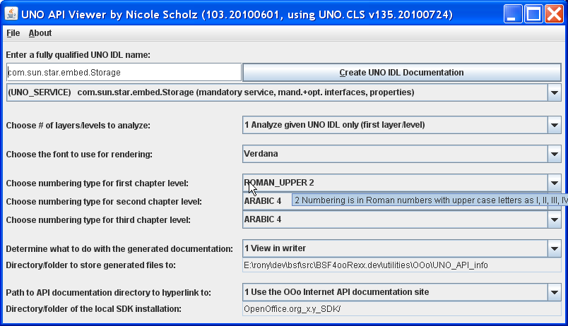

A BSF4ooRexx-application taking advantage of Java swing to create an easy to use interface with: "rexx frontend_UNO_API_info.rxo" (location: "bsf4oorexx/utilities/OOo/UNO_API_info").
Either enter a fully qualified UNO IDL string or experiment by
choosing a UNO IDL string from the sample UNO IDL string drop-down
list.

The ooRexx script can be invoked via the UNO dispatch interface supplying a UNO object or a UNO IDL string as an argument. In addition rendering options can be given as a second argument in form of an array of PropertyValues, where the name field denotes the option's name and the value the desired value.
"HowtoCreateApiInfo.bas":
' demonstrates how to use "UNO_API_info.rxo" from OOo Basic Sub testCreateApiInfo DIM sDispatchHelper AS object, xDispatchProvider AS object ' objects DIM macroUrl, library, scriptName, langName, location ' variants DIM args1(0) AS NEW com.sun.star.beans.PropertyValue ' array of type PropertyValue DIM args2(1), options(6) ' arrays of variants sDispatchHelper =createUnoService("com.sun.star.frame.DispatchHelper") ' create DispatchHelper service xDispatchProvider=ThisComponent.CurrentController.Frame ' get dispatch provider interface of current Desktop ' define Rexx dispatch target, library "wu_tools", script name "create_UNO_API_info.rex", location "share" location = "share" ' case sensitive, other possible values: "user" (current user), "application" libraryName = "wu_tools" ' case sensitive, name of the Rexx macro library scriptName = "UNO_API_info.rxo" ' case sensitive, name of the Rexx script langName = "ooRexx" ' case sensitive, OOo name of the scripting language ' build 'macroUrl' string for the dispatcher macroUrl = "vnd.sun.star.script:" & libraryName & "." & scriptName & "?language=" & langName & "&location=" & location ' ------ use one argument denoting a UNO object from the running program ' define one argument (a UNO object from the running program) ' remark: the array 'args1' is explicitly defined to be of type com.sun.star.beans.PropertyValue, ' hence its element is a PropertyValue object already args1(0).name ="arg1" ' name of the PropertyValue args1(0).value=sDispatchHelper ' value: UNO object to analyze and document ' dispatching to 'UNO_API_info.rxo' using a UNO object from the running program sDispatchHelper.executeDispatch(xDispatchProvider, macroUrl, "", 0, args1()) ' define options; create PropertyValue objects and assign them to the 'options' variant array options(0)=createProperty("NrOfLayers", 2) ' 2="show two levels deep" options(1)=createProperty("View", 1) ' 1="view in writer" options(2)=createProperty("DocumentationSource", 1) ' 1="use Internet" (base url) options(3)=createProperty("NumberingTypeLevel_1", 0) ' 0="Alpha Uppercase" options(4)=createProperty("NumberingTypeLevel_2", 4) ' 4="arabic" options(5)=createProperty("NumberingTypeLevel_3", 3) ' 3="roman lower" options(6)=createProperty("FontName", "DejaVu Sans Condensed") ' define two arguments (a UNO IDL string and formatting options ' create PropertyValue objects and assign them to the 'args2' variant array args2(0)=createProperty("arg1", "com.sun.star.frame.Desktop") ' a UNO IDL string args2(1)=createProperty("arg2", options) ' rendering options ' dispatching to 'UNO_API_info.rxo' using a UNO IDL string and rendering options sDispatchHelper.executeDispatch(xDispatchProvider, macroUrl, "", 0, args2()) End Sub ' utility function to ease creation of PropertyValue objects Function createProperty (n AS string, v) prop = CreateObject("com.sun.star.beans.PropertyValue") ' create a PropertyValue object prop.name = n ' assign name (a string) prop.value = v ' assign value (a variant, i.e. can be any value) createProperty = prop ' set this function's return value end Function
The ooRexx script can be invoked via the UNO dispatch interface supplying a UNO object or a UNO IDL string as an argument. In addition rendering options can be given as a second argument in form of an array of PropertyValues, where the name field denotes the option's name and the value the desired value.
"HowtoCreateApiInfo.java":
import com.sun.star.beans.PropertyValue;
import com.sun.star.frame.XDesktop;
import com.sun.star.frame.XDispatchHelper;
import com.sun.star.frame.XDispatchProvider;
import com.sun.star.lang.XMultiComponentFactory;
import com.sun.star.lang.XMultiServiceFactory;
import com.sun.star.uno.UnoRuntime;
import com.sun.star.uno.XComponentContext;
class HowtoCreateApiInfo {
public static void main (String args[]) {
// excerpted from "HardFormatting.java" from the OOo development package
XDesktop xDesktop = null;
XMultiComponentFactory xMCF = null;
XMultiServiceFactory xMSF = null;
try {
XComponentContext xContext = null;
// bootstrap the UNO runtime environment
xContext = com.sun.star.comp.helper.Bootstrap.bootstrap();
// get the service manager
xMCF = xContext.getServiceManager();
xMSF = (XMultiServiceFactory) UnoRuntime.queryInterface(XMultiServiceFactory.class, xMCF);
if (xMSF!=null)
{
System.out.println("Java: connected to the bootstrapped office ...\n---");
// get XDispatchProvider from XDesktop
Object oDesktop = xMSF.createInstance("com.sun.star.frame.Desktop");
xDesktop = (XDesktop) UnoRuntime.queryInterface(XDesktop.class, oDesktop);
XDispatchProvider xDispatchProvider=(XDispatchProvider)
UnoRuntime.queryInterface(XDispatchProvider.class, xDesktop);
Object sDispatchHelper= xMSF.createInstance("com.sun.star.frame.DispatchHelper");
XDispatchHelper xDispatchHelper=(XDispatchHelper)
UnoRuntime.queryInterface(XDispatchHelper.class, sDispatchHelper);
// invoke the ooRexx script to document the UNO object/IDL
// define Rexx dispatch target, library "wu_tools", script name "create_UNO_API_info.rxo", location "share"
String location ="share", // case sensitive, other possible values: "user" (current user), "application"
libraryName="wu_tools", // case sensitive, name of the Rexx macro library
scriptName ="UNO_API_info.rxo", // case sensitive, name of the Rexx script
langName ="ooRexx"; // case sensitive, OOo name of the scripting language
// build 'macroUrl' string for the dispatcher
String macroUrl="vnd.sun.star.script:"+libraryName+"."+scriptName+
"?language="+langName+
"&location="+location;
// define one argument (a UNO object from the running program)
PropertyValue args1[]={createProperty("arg1", sDispatchHelper) };
System.out.println("Java: dispatching to 'create_UNO_API_info.rxo' using a UNO object from the running program...");
// dispatch, supplying arguments
xDispatchHelper.executeDispatch(
xDispatchProvider, // XdispatchProvider
macroUrl, // URL
"", // TargetFrameName
0, // SearchFlags
args1); // Arguments
// ============================== next dispatch uses a UNO IDL string and options
System.out.println("---");
// define options
PropertyValue options[]= {
createProperty("NrOfLayers", new Integer(2)), // 2="show two levels deep"
createProperty("View", new Integer(1)), // 1="view in writer"
createProperty("DocumentationSource", new Integer(1)), // 1="use Internet" (base url)
createProperty("NumberingTypeLevel_1", new Integer(0)), // 0="Alpha Uppercase"
createProperty("NumberingTypeLevel_2", new Integer(4)), // 4="arabic"
createProperty("NumberingTypeLevel_3", new Integer(3)), // 3="roman lower"
createProperty("FontName", "DejaVu Sans Condensed")
};
// define two arguments
PropertyValue args2[]=
{
createProperty("arg1", "com.sun.star.frame.Desktop"), // analyze UNO IDL name
createProperty("arg2", options) // rendering options
};
System.out.println("Java: dispatching to 'create_UNO_API_info.rxo' using a UNO IDL string and rendering options...");
// dispatch, supplying arguments
xDispatchHelper.executeDispatch(
xDispatchProvider, // XdispatchProvider
macroUrl, // URL
"", // TargetFrameName
0, // SearchFlags
args2); // Arguments
}
}
catch( Exception e) {
e.printStackTrace(System.err);
System.exit(1);
}
System.err.println("end of program run.");
System.exit(0);
}
// utility method to ease creation of PropertyValue objects
static PropertyValue createProperty(String n, Object v)
{
PropertyValue prop=new PropertyValue();
prop.Name =n;
prop.Value=v;
return prop;
}
}
The ooRexx script can be invoked via the UNO dispatch interface supplying a UNO object or a UNO IDL string as an argument. In addition rendering options can be given as a second argument in form of an array of PropertyValues, where the name field denotes the option's name and the value the desired value.
"HowtoCreateApiInfo.js":
importClass(Packages.com.sun.star.beans.PropertyValue);
importClass(Packages.com.sun.star.frame.XDispatchHelper);
importClass(Packages.com.sun.star.frame.XDispatchProvider);
importClass(Packages.com.sun.star.uno.UnoRuntime);
// utility method to ease creation of PropertyValue objects
function createProperty(n, v)
{
prop=new PropertyValue();
prop.Name =n;
prop.Value=v;
return prop;
}
// get important objects from the XSCRIPTCONTEXT
xDispatchProvider = UnoRuntime.queryInterface(XDispatchProvider, XSCRIPTCONTEXT.getDesktop());
ctx = XSCRIPTCONTEXT.getComponentContext();
smgr = ctx.getServiceManager();
// define Rexx dispatch target, library "wu_tools", script name "create_UNO_API_info.rxo", location "share"
location = "share";
libraryName = "wu_tools";
scriptName = "UNO_API_info.rxo";
langName = "ooRexx";
// build -- macroUrl-- string for the dispatcher
macroUrl = "vnd.sun.star.script:"+libraryName+"."+scriptName+"?language="+langName+"&location="+location;
// create a UNO service object
sdh = smgr.createInstanceWithContext("com.sun.star.frame.DispatchHelper", ctx);
xDispatchHelper = UnoRuntime.queryInterface(XDispatchHelper, sdh);
args = new Array;
args[0]= createProperty("arg1", sdh);
// dispatch the ooRexx macro to document the 'sdh' service object using the default settings
xDispatchHelper.executeDispatch(xDispatchProvider, macroUrl, "", 0, args);
// --------------------------------------------------------------------------
// must define this PropertyValue array as a Java array as otherwise the bridge will not be
// able to correctly convert the JavaScript dynamic array in the executeDispatch invocation
options = java.lang.reflect.Array.newInstance(PropertyValue, 7);
options[0]= createProperty("NrOfLayers", "2" ); // 2="show two levels deep"
options[1]= createProperty("View", "1" ); // 1="view in writer"
options[2]= createProperty("DocumentationSource", "1" ); // 1="use Internet" (base url)
options[3]= createProperty("NumberingTypeLevel_1", "0" ); // 0="Alpha Uppercase"
options[4]= createProperty("NumberingTypeLevel_2", "4" ); // 4="arabic"
options[5]= createProperty("NumberingTypeLevel_3", "3" ); // 3="roman lower"
options[6]= createProperty("FontName", "DejaVu Sans Condensed");
// define two arguments
args[0] = createProperty("arg1", "com.sun.star.frame.Desktop"); // analyze UNO IDL name
args[1] = createProperty("arg2", options); // rendering options
// dispatch the ooRexx macro to document the UNO IDL 'com.sun.star.frame.Desktop' using specific settings
xDispatchHelper.executeDispatch(xDispatchProvider, macroUrl, "", 0, args);
The ooRexx script can be invoked via the UNO dispatch interface supplying a UNO object or a UNO IDL string as an argument. In addition rendering options can be given as a second argument in form of an array of PropertyValues, where the name field denotes the option's name and the value the desired value.
"HowtoCreateApiInfo.rxo":
xScriptContext = uno.getScriptContext() -- get Script context
xComponentContext = xScriptContext~getComponentContext
xDesktop = xScriptContext~getDesktop
-- this macro just works externally, called by rexxj or rexx
-- create DispatchHelper service and query its interface
xMultiServiceFactory = xComponentContext~getServiceManager~XMultiServiceFactory
sDispatchHelper = xMultiServiceFactory~createInstance("com.sun.star.frame.DispatchHelper")
xDispatchHelper = sDispatchHelper~XDispatchHelper
xDispatchProvider = xDesktop~XDispatchProvider -- get dispatch provider interface of current Desktop
-- define Rexx dispatch target, library "wu_tools", script name "create_UNO_API_info.rxo", location "share"
location = "share" -- case sensitive, other possible values: "user" (current user), "application"
libraryName = "wu_tools" -- case sensitive, name of the Rexx macro library
scriptName = "UNO_API_info.rxo" -- case sensitive, name of the Rexx script
langName = "ooRexx" -- case sensitive, OOo name of the scripting language
-- build -- macroUrl-- string for the dispatcher
macroUrl="vnd.sun.star.script:"libraryName"."scriptName"?language="langName"&location="location
-- define one argument (a UNO object from the running program)
args = uno.CreateArray(.UNO~PROPERTYVALUE, 1) -- array for argument
args[1] = uno.createProperty("arg1", sDispatchHelper)
-- dispatch
res = xDispatchHelper~executeDispatch(xDispatchProvider, macroURL, "", 0, args)
-- define options
options = uno.CreateArray(.UNO~PROPERTYVALUE, 7) /* define array for options */
options[1] = uno.createProperty("NrOfLayers", 2) -- 2="show two levels deep"
options[2] = uno.createProperty("View", 1) -- 1="view in writer"
options[3] = uno.createProperty("DocumentationSource", 1) -- 1="use Internet" (base url)
options[4] = uno.createProperty("NumberingTypeLevel_1", 0) -- 0="Alpha Uppercase"
options[5] = uno.createProperty("NumberingTypeLevel_2", 4) -- 4="arabic"
options[6] = uno.createProperty("NumberingTypeLevel_3", 3) -- 3="roman lower"
options[7] = uno.createProperty("FontName", "DejaVu Sans Condensed")
-- define two arguments
args=uno.createArray(.uno~propertyValue, 2) -- we have two arguments
args[1]=uno.createProperty("arg1", "com.sun.star.frame.Desktop") -- a UNO IDL string
args[2]=uno.createProperty("arg2", options) -- the öptions for rendering
-- dispatch
res = xDispatchHelper~executeDispatch(xDispatchProvider, macroURL, "", 0, args)
::requires UNO.CLS -- get the UNO-support (includes BSF.CLS, i.e. Java-support)
The ooRexx script can be invoked directly from an ooRexx program supplying a UNO object or a UNO IDL string as an argument. In addition rendering options can be given as a second argument in form of an ooRexx directory object, where the index denotes the option's name and the value the desired value.
"HowtoCreateApiInfo_direct.rxo":
xDesktop = UNO.createDesktop()~XDesktop -- create Desktop object, query XDesktop interface call analyzeAndCreateReference xDesktop -- create documentation for the XDesktop interface object, use default options -- define options options = .directory~new options~NrOfLayers = 2 -- 2=show two levels deep options~View = 1 -- 1=view in writer options~DocumentationSource = 1 -- 1=use Internet (base url options~NumberingTypeLevel_1 = 0 -- 0=Alpha Uppercase options~NumberingTypeLevel_2 = 4 -- 4=arabic options~NumberingTypeLevel_3 = 3 -- 3=roman lower options~FontName = "DejaVu Sans Condensed" call analyzeAndCreateReference "com.sun.star.frame.Desktop", options -- create documentation for a UNO IDL string ::requires "UNO_API_info.orx" -- establish UNO API info support (loads UNO and BSF support)
The ooRexx script can be invoked via the UNO dispatch interface supplying a UNO object or a UNO IDL string as an argument. In addition rendering options can be given as a second argument in form of an array of PropertyValues, where the name field denotes the option's name and the value the desired value.
"HowtoCreateApiInfo.py":
from com.sun.star.beans import PropertyValue
def createApiInfo( ):
"""Uses the ooRexx macro UNO_API_info.rxo to document an OOo service object and a UNO IDL type string"""
# get the OOo Desktop and the ServiceManager
desktop = XSCRIPTCONTEXT.getDesktop()
ctx = XSCRIPTCONTEXT.getComponentContext()
smgr = ctx.ServiceManager
# define Rexx dispatch target, library "wu_tools", script name "create_UNO_API_info.rxo", location "share"
location = "share"
libraryName = "wu_tools"
scriptName = "UNO_API_info.rxo"
langName = "ooRexx"
# build -- macroUrl-- string for the dispatcher
macroUrl = "vnd.sun.star.script:"+libraryName+"."+scriptName+"?language="+langName+"&location="+location
# create a UNO service object
sdh = smgr.createInstance("com.sun.star.frame.DispatchHelper")
a1 = createPropertyValue("arg1", sdh)
# dispatch the ooRexx macro to document the 'sdh' service object using the default settings
sdh.executeDispatch(desktop, macroUrl, "", 0, (a1,))
# --- document a UNO IDL string, change the formatting default values
a1.Value = "com.sun.star.frame.Desktop" # a UNO IDL string
p1=createPropertyValue("NrOfLayers", 2) # 2="show two levels deep"
p2=createPropertyValue("View", 1) # 1="view in writer"
p3=createPropertyValue("DocumentationSource", 1) # 1="use Internet" (base url)
p4=createPropertyValue("NumberingTypeLevel_1", 0) # 0="Alpha Uppercase"
p5=createPropertyValue("NumberingTypeLevel_2", 4) # 4="arabic"
p6=createPropertyValue("NumberingTypeLevel_3", 3) # 3="roman lower"
p7=createPropertyValue("FontName", "DejaVu Sans Condensed")
a2=createPropertyValue("arg2", (p1,p2,p3,p4,p5,p6,p7))
# dispatch the ooRexx macro to document the UNO IDL definitions using the supplied settings
sdh.executeDispatch(desktop, macroUrl, "", 0, (a1,a2))
def createPropertyValue (name, value):
"""Utility function to ease creation of PropertyValues"""
pv = PropertyValue()
pv.Name = name # assign name
pv.Value = value # assign value
return pv # return PropertyValue object
# list those functions that should be shown in the OOo-UI
g_exportedScripts = createApiInfo,
The following table describes the optional properties that will be honored by the utility program. The numeric values can be supplied as any of the available UNO numeric types or of string type (it does not matter for Rexx).
|
Property Name |
Default Value |
Brief Explanation |
"NrOfLayers" |
"1" |
"1" ...analyze and document only the UNO object/definition itself, "2" ...if a UNO service or interface (object or IDL string), also analyze and document all of the contained UNO services/interfaces |
"NumberingTypeLevel_1" |
"2" |
Roman number, c.f. "com.sun.star.style.NumberingType", also the GUI drop-down list, which depicts the numeric values of the types |
"NumberingTypeLevel_2" |
"4" |
Arabic number, c.f. "com.sun.star.style.NumberingType", also the GUI drop-down list, which depicts the numeric values of the types |
"NumberingTypeLevel_3" |
"4" |
Arabic number, c.f. "com.sun.star.style.NumberingType", also the GUI drop-down list, which depicts the numeric values of the types |
"FontName" |
"Arial" |
Any installed font that is available to Openoffice.org. |
"View" |
"1" |
"1" ... view in writer "2" ... save as writer document, view in writer "3" ... save as writer document, print document "4" ... save as writer document and create PDF file |
"StoreToDirectory" |
"" |
Denotes fully qualified path to the directory in which the resulted documents should be stored to (default: "current directory"), if the "View" property is set to a value between "2" and "4". |
"DocumentationSource" |
"1" |
"1" ... Links should be created to the well-known Internet-based, official OpenOffice.org HTML documentation "2" ... Links should be created to the locally installed OpenOffice.org SDK (Software Development Kit) HTML documentation |
"DocumentationFolder" |
"" |
Fully qualified path to the root of the locally installed OpenOffice.org SDK |
Rony G. Flatscher, Vienna, Austria, as of 2010-08-30, 2013-01-10